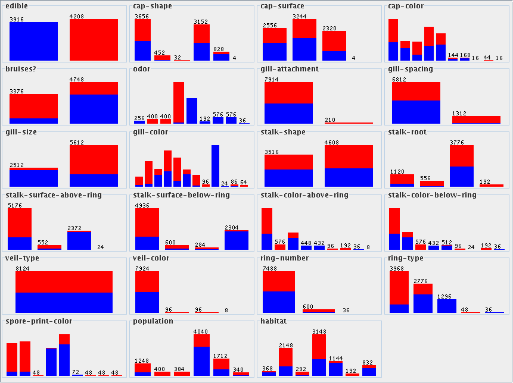

by Brandon Vargo
The mushroom problem started with a dataset of mushrooms containing a number of attributes, ranging from smell to various shape aspects, in addition to whether the mushrooms were poisonous. The goal of the project was to determine which mushroom attributes, if any, could predict whether the mushroom would be edible or poisonous.
I started the project by reading the metadata file (mushroom.meta.txt), in order to get a feeling for the data contained within the dataset, such as the attribute types. I found that the data describes a number of attributes about mushrooms, and the primary ``objective'' of the dataset is determining whether a given mushroom is poisonous. If the edibility status is unknown, then a mushroom is classified as poisonous.
Next, I looked at the data file itself (mushroom.data.csv). In particular, I looked at the format of the data and for any missing attributes. I found that the data was a standard CSV file with no missing attributes, matching the information found in the metadata file. The first attribute is the edibility of the mushroom, and the other attributes correspond to the attributes listed in the metadata file.
For this assignment, I decided to continue using Weka. So far, Weka has proved easier to use than Knime, and I have not had a need to switch to Knime yet. For the purposes of filtering data, I used gnumeric, an Excel-like clone, in order to browse and filter the data as needed. I also tried Weka's filtering, particularly the RemoveUseless unsupervised instance filter, but it was not particularly effective.
All of the twenty-two attributes are nominally valued. That is, each attribute has a finite number of discrete values that are assigned in name. This makes it difficult to generate summary statistics, such as averages. It does not make sense to ask the average of bell, conical, convex, flat, knobbed, and sunken for the shape of the mushroom cap.
That said, it is possible to look at the distribute of nominal labels among particular groups. The figure shows the distribution of edible vs poisonous among all of the attributes. This view allows an analyst to easily look at the data from a ten-thousand foot view. In this case, we can see that some attribute values are evenly distributed, while other attribute values are extremely rare. For example, the cap shape of c (convex) is rare, with only 4 mushroom data points having convex cap shapes, while all of the mushrooms have the veil type of p (partial). There does not appear to be a single attribute that can identify edible mushrooms, though odor appears to come close if the odor values are grouped.
Upon initial glance, not easily. As noted above, odor appears to come close. If the odors N, L, and A (non, anise, and almond) are combined as one group, and all other odors are another group, then few mushrooms are misclassified. How many is a few? Weka, the tool that produced the above analysis, does not have an easy mechanism to show how many records are a given color within a single bar. Using other tools, it can be shown that 120 mushrooms are misclassified using this method, as there are 120 poisonous mushrooms with no odor. This represents an error rate of just under 1.5\%. This is not bad for looking at a few colors on the screen!
Taking a more scientific group, I decided to try clustering, seeing ``groups'' in the question. However, since the attributes are nominal, then clustering probably does not make much sense. There is not a good metric for defining the distance between two objects. Nevertheless, I gave the data to Weka's EM clustering algorithm. It ran for quite some time before I ended the process, knowing that the results would probably not be very useful given the nominal attributes.
To answer this question, I initially used Weka's SimpleCart algorithm, a tree-based classifier. It produced the following tree:
odor=(a)|(l)|(n) | spore-print-color=(k)|(n)|(u)|(h)|(o)|(y)|(b)|(w) | | stalk-color-below-ring=(p)|(g)|(e)|(o)|(w)|(n)|(b)|(c) | | | cap-surface=(s)|(f)|(y) | | | | stalk-color-below-ring=(p)|(g)|(e)|(o)|(w)|(b)|(y)|(c): e(4144.0/4.0) | | | | stalk-color-below-ring!=(p)|(g)|(e)|(o)|(w)|(b)|(y)|(c) | | | | | stalk-surface-above-ring=(s)|(f)|(y): e(64.0/0.0) | | | | | stalk-surface-above-ring!=(s)|(f)|(y): p(16.0/0.0) | | | cap-surface!=(s)|(f)|(y): p(4.0/0.0) | | stalk-color-below-ring!=(p)|(g)|(e)|(o)|(w)|(n)|(b)|(c): p(24.0/0.0) | spore-print-color!=(k)|(n)|(u)|(h)|(o)|(y)|(b)|(w): p(72.0/0.0) odor!=(a)|(l)|(n): p(3796.0/0.0)
Note that the first decision made is whether the odor should is one of a, l, or n. This is the same classification model that was identified above by looking at the summary diagram. The rest of the decision tree generated reduces the error to five mushroom instances, or 0.0615\% of the records.
In some of the nodes above, the support of the path to the node is very low. For example, the
cap-surface!=(s)|(f)|(y)decision only affects four records, while the remaining records ``travel down'' the other side of the branch. This may be a case of overfitting, as these records may be anomalies, or they may be legitimate mushrooms.
Weka's PART classifier, a rule classifier, produces the following thirteen rules. This ruleset correctly identifies whether a mushroom can be eaten in all cases for the data.
odor = f: p (2160.0) gill-size = b AND ring-number = o: e (3392.0) ring-number = t AND spore-print-color = w: e (528.0) odor = y: p (576.0) odor = s: p (576.0) stalk-shape = e AND stalk-surface-below-ring = s AND odor = p: p (256.0) stalk-shape = e AND odor = c: p (192.0) gill-size = n AND stalk-surface-above-ring = s AND population = v: e (192.0) gill-size = b: p (108.0) stalk-surface-below-ring = s AND bruises? = f: e (60.0) stalk-surface-below-ring = y: p (40.0) bruises? = f: e (36.0) : p (8.0)
See the anomaly section below for a short discussion on these rules, and why more knowledge is needed to determine whether this model is overfitting the data or whether the rules could match a larger set of mushrooms effectively.
Maybe. There are certainly small groups of mushrooms that do not match rules that cover most of the dataset, as outlined below. Whether these small groups of mushrooms can be considered outliers, or whether these mushrooms happen to be part of another group that is not included in the dataset is specific to the domain. With respect to the dataset, these mushrooms may be outliers.
Applying a traditional statistical approach is not easy in this application, due to the large number of dimensions, all of which are nominal attributes. Thus, it makes more sense to produce a model and look at the cases that the model does not match the data. The data may be ``wrong'' in the sense that the non-matching records are outliers. Likewise, the model could be ``wrong'' in the sense that it does not encompass all of the complexities of mushrooms, either due to not enough data records or hidden attributes that could not be included in the model. For example, in the above approach of looking at the Weka colored output, are the 120 misclassified mushrooms outliers? Perhaps. What about the 8 mushrooms that final rule of the rule-based classifier matches? Perhaps. More evaluation is necessary, with more domain-specific knowledge.
Once again, I used Weka in order to answer this question. Using the apriori association algorithm with a minimum support of 0.95 and a minimum confidence of 0.9, the following are the top ten rules generated by Weka:
1. veil-color=w 7924 ==> veil-type=p 7924 conf:(1) 2. gill-attachment=f 7914 ==> veil-type=p 7914 conf:(1) 3. gill-attachment=f veil-color=w 7906 ==> veil-type=p 7906 conf:(1) 4. gill-attachment=f 7914 ==> veil-color=w 7906 conf:(1) 5. gill-attachment=f veil-type=p 7914 ==> veil-color=w 7906 conf:(1) 6. gill-attachment=f 7914 ==> veil-type=p veil-color=w 7906 conf:(1) 7. veil-color=w 7924 ==> gill-attachment=f 7906 conf:(1) 8. veil-type=p veil-color=w 7924 ==> gill-attachment=f 7906 conf:(1) 9. veil-color=w 7924 ==> gill-attachment=f veil-type=p 7906 conf:(1) 10. veil-type=p 8124 ==> veil-color=w 7924 conf:(0.98)
All of the results that have a consequent of only veil-type are worthless. All of the data has a veil-type of p, so of course any antecedent is going to produce a consequent with a veil-type of p!
After running the generator again, this time ignoring veil-type, the following rules are produced:
1. veil-color=w ring-number=o 7288 ==> gill-attachment=f 7288 conf:(1) 2. gill-attachment=f gill-spacing=c 6602 ==> veil-color=w 6602 conf:(1) 3. gill-spacing=c veil-color=w ring-number=o 6272 ==> gill-attachment=f 6272 conf:(1) 4. gill-attachment=f gill-spacing=c ring-number=o 6272 ==> veil-color=w 6272 conf:(1) 5. gill-attachment=f gill-size=b 5402 ==> veil-color=w 5402 conf:(1) 6. stalk-surface-above-ring=s veil-color=w 4984 ==> gill-attachment=f 4984 conf:(1) 7. gill-attachment=f stalk-surface-above-ring=s 4984 ==> veil-color=w 4984 conf:(1) 8. gill-size=b veil-color=w ring-number=o 4784 ==> gill-attachment=f 4784 conf:(1) 9. gill-attachment=f gill-size=b ring-number=o 4784 ==> veil-color=w 4784 conf:(1) 10. stalk-surface-below-ring=s veil-color=w 4744 ==> gill-attachment=f 4744 conf:(1)
Again, most of these rules are pointless. In order to try and find more interesting associations, let us remove all attributes that are predominantly dominated by a single value: gill-attachment, gill-spacing, veil-type, veil-color, and ring-number. The following rules are produced:
1. odor=n gill-size=b 3288 ==> edible=e 3216 conf:(0.98)
2. bruises?=t stalk-surface-below-ring=s 3040 ==>
stalk-surface-above-ring=s 2968 conf:(0.98)
3. odor=n 3528 ==> edible=e 3408 conf:(0.97)
4. stalk-surface-below-ring=s ring-type=p 3472 ==>
stalk-surface-above-ring=s 3328 conf:(0.96)
5. bruises?=t 3376 ==> stalk-surface-above-ring=s 3232 conf:(0.96)
6. bruises?=t ring-type=p 3184 ==> stalk-surface-above-ring=s 3040 conf:(0.95)
7. gill-size=b stalk-surface-above-ring=s stalk-surface-below-ring=s 3064 ==>
edible=e 2920 conf:(0.95)
8. bruises?=t gill-size=b 3016 ==> stalk-surface-above-ring=s 2872 conf:(0.95)
9. edible=e ring-type=p 3152 ==> stalk-surface-above-ring=s 2992 conf:(0.95)
10. edible=e odor=n 3408 ==> gill-size=b 3216 conf:(0.94)
These rules may be considered more useful. However, I am not a mushroom expert, so more domain knowledge is needed in order to determine the qualitative quality of the rules.